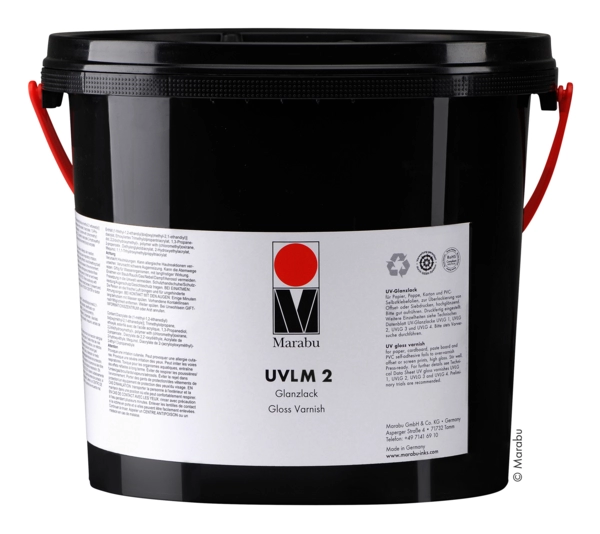

UV-CURABLE
UV Special Varnishes
Marabu's special UV varnishes are suitable for rotary and flatbed screen printing. They enable high-gloss and matt surfaces or tactile prints. The full-surface or partial varnishing protects prints against mechanical and chemical stress.
Request a quote